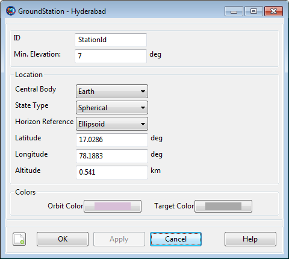
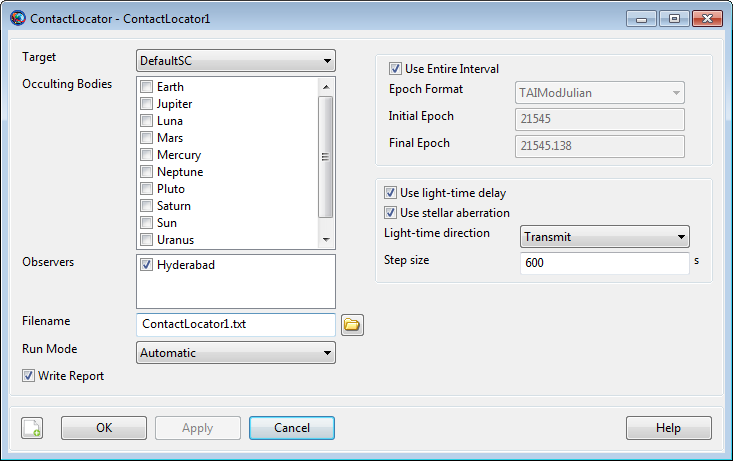

Finding ground station contact times is a very similar process, but we'll use the ContactLocator resource instead. First we need to add a GroundStation, then we can configure the locator to find contact times between it and our spacecraft.
Let's create a ground station that will be in view from the final geostationary orbit. By looking at the DefaultGroundTrackPlot window, our spacecraft is positioned over the Indian Ocean. A ground station in India should be in view. We can choose the Hyderabad facility, which has the following properties:
Latitude: 17.0286 deg
Longitude: 78.1883 deg
Altitude: 0.541 km
Let's create this ground station in GMAT:
First, close all graphics and solver windows, to allow full manipulation of resources.
On the Resources tab, right-click the Ground Station folder and click Add Ground Station. This will create a new resource called GroundStation1.
Rename GroundStation1 to Hyderabad.
Double-click Hyderabad to edit its configuration.
The following values are configured appropriately by default, so we won't change them:
Min. Elevation: This is the minimum elevation angle from the ground station for a valid contact. The current value (7 deg) is appropriate for this case.
Central Body: Earth is the only allowed value at this time.
In the State Type list, select Spherical. This allows input in latitude, longitude, and altitude.
In the Horizon Reference list, select Ellipsoid.
In the Latitude box, type
17.0286.In the Longitude box, type
78.1883.In the Altitude box, type
0.541.Click OK to accept these changes.
The configured GroundStation should look like the following screenshot:
|  |
If you add the GroundStation to the DefaultGroundTrackPlot, you can see the location visually:
 |
Now we can create a ContactLocator that will search for contact times between our spacecraft and the Hyderabad station.
On the Resources tab, right-click the Event Locators folder, point to Add, and click ContactLocator. This will create ContactLocator1.
Double-click ContactLocator1 to edit the configuration.
Many of the default values are identical to the EclipseLocator, so we don't need to explain them again. There are a couple new properties that we'll note, but won't change:
Occulting Bodies: These are celestial bodies that GMAT will search for occultations of the line of sight between the spacecraft and the ground station. Since our spacecraft is orbiting the Earth, we don't need to choose any occulting bodies. Note that Earth is considered automatically because it is the central body of the ground station.
Light-time direction: This is the signal sense of the ground station. You can choose to calculate light-time delay as if the ground station is transmitting, or if it is receiving.
In the Observers list, enable Hyderabad. This will cause GMAT to search for contacts to this station.
In the Step size box, type
600. Since we're not using third-body occultations, this step size can be increased significantly without missing events. See the ContactLocator documentation for details.Click to accept the changes.
When fully configured, the GroundStation1 window will look like the following screenshot:
|  |
Now it's time to run the mission again and look at these new results.
Click Run (
 ) to run the mission.
) to run the mission.The contact search will take much less time than the eclipse search, since we're using a larger step size. As it progresses, you'll see the following message in the message window at the bottom of the screen:
Finding events for ContactLocator ContactLocator1 ... Celestial body properties are provided by SPICE kernels.
When the run is complete, click the Output tab to view the available output.
Double-click ContactLocator1 to view the report.
You'll see a report that looks similar to this:
 |
Notice that two contact intervals were found: one about 6 minutes long at the very beginning of the mission (it starts at the Spacecraft's initial epoch), and a second one about 29 hours long, starting once it gets into geosynchronous orbit and extending to the end of the simulation.
Click Close to close the report. The report text is still available as
ContactLocator1.txtin the GMAToutputfolder.